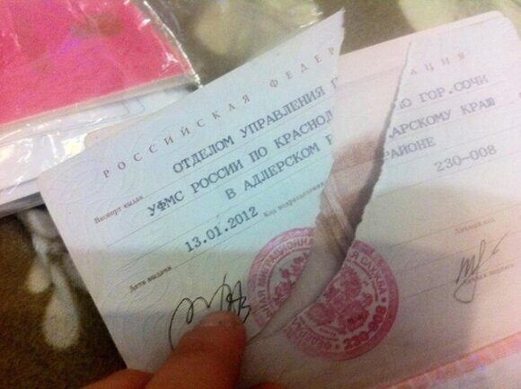

« НазадПоврежден паспорт: что делать и куда обращаться? Паспорт гражданина Российской Федерации является важным документом, удостоверяющим вашу личность и подтверждающим ваше российское гражданство. Он необходим для различных юридических процедур, таких как заключение договоров, оформление банковских счетов, получение государственных услуг и многое другое. Если ваш паспорт был поврежден (например, страницы разорваны, залиты жидкостью, имеют значительные повреждения), крайне важно незамедлительно приступить к процессу его замены. Это поможет вам избежать возможных трудностей при идентификации личности и связанных с этим неудобств. В данной статье мы подробно опишем весь процесс замены поврежденного паспорта. Мы расскажем о необходимых документах, которые нужно подготовить перед обращением в соответствующие органы, а также о шагах, которые необходимо предпринять для успешного завершения процедуры. Кроме того, вы найдете полезные советы, которые помогут сделать этот процесс более быстрым и удобным. Причины для замены паспортаЗамена паспорта может быть необходима по ряду причин, каждая из которых может существенно повлиять на его функциональность и юридическую силу. Одной из наиболее распространенных причин является физическое изнашивание документа. Со временем паспорт может подвергаться воздействию различных факторов, таких как царапины и потертости, которые делают его внешний вид неаккуратным и могут вызвать сомнения у сотрудников служб. Также стоит отметить, что паспорт может пострадать от воздействия воды или огня. Например, в случае затопления или пожара документ может быть поврежден до такой степени, что его дальнейшее использование станет невозможным. Кроме того, утрата части страниц паспорта, будь то из-за механических повреждений или случайного удаления, может привести к тому, что паспорт станет недействительным. Неправильное обращение с паспортом также может стать причиной его замены. К примеру, если документ часто сгибается или рвется, это может привести к его порче. Важно помнить, что паспорт — это не просто бумажка, а официальный документ, который удостоверяет личность и гражданство. Поэтому его сохранность имеет огромное значение. Если вы заметили какие-либо из вышеперечисленных проблем, лучше не откладывать процесс получения нового документа. Замена паспорта — это не только вопрос удобства, но и необходимость для обеспечения вашей безопасности и правовой защиты. Шаги по замене поврежденного паспортаВот подробное описание: Шаг 1: Оцените степень повреждения паспортаПрежде чем приступать к процессу замены вашего паспорта, необходимо тщательно оценить его состояние. Для этого внимательно осмотрите документ. Если вы обнаружите, что повреждения носят лишь поверхностный характер и не влияют на основные данные, такие как фотография, ваше полное имя, фамилия, а также дата рождения, вполне вероятно, что полной замены документа может не потребоваться. В таком случае можно ограничиться менее радикальными мерами. Однако, если ваш паспорт сильно поврежден, например, страницы выглядят нечитаемыми, или некоторые важные элементы (например, подпись) невозможно различить, это может создать проблемы при проверке документов сотрудниками различных государственных учреждений. В этом случае рекомендуется обратиться за заменой паспорта для предотвращения возможных трудностей в будущем. Шаг 2: Подготовьте необходимых документовДля замены паспорта вам будут необходимы следующие документы:
Шаг 3: Оплатите госпошлинуОплата государственной пошлины может быть произведена различными способами: через банковские учреждения, платежные терминалы либо посредством онлайн-сервисов. После осуществления платежа обязательно сохраните квитанцию об оплате, поскольку этот документ будет необходим для предоставления вместе с заявлением. Шаг 4: Заполните заявлениеЗаявление о замене паспорта можно заполнить непосредственно в отделе УВМ МВД (Управление по вопросам миграции Министерства внутренних дел) при личном визите, либо заранее скачать с официального сайта Министерства внутренних дел (МВД). Важно внимательно проверить все указанные данные и убедиться в их точности перед подачей заявления. Шаг 5: Подайте документыОбратитесь в отдел УВМ МВД по месту вашей регистрации либо в многофункциональный центр (МФЦ) для подачи заявления о замене паспорта. Когда вы будете подавать документы, сотрудники службы могут задать вам несколько дополнительных вопросов относительно обстоятельств повреждения вашего паспорта. Поэтому заранее подготовьтесь и будьте готовы подробно рассказать, каким образом ваш паспорт получил повреждение. Шаг 6: Ожидайте готовности нового паспортаСроки изготовления нового паспорта 5 рабочих дней, но на практике обычно составляют от 10 до 30 дней. Однако, если вы находитесь в ситуации, когда вам необходимо получить паспорт в срочном порядке, например, для предстоящей зарубежной поездки, рекомендуется уточнить у инспектора возможность оформления документа в ускоренном режиме. Шаг 7: Получите новый паспортПосле того как ваш новый паспорт будет изготовлен и полностью готов к выдаче, вам нужно будет прийти за ним либо в отдел Управления по вопросам миграции Министерства внутренних дел (УВМ МВД), либо в многофункциональный центр (МФЦ). При получении документа не забудьте тщательно проверить все указанные в нем данные на предмет возможных ошибок. Полезные советыЗамена поврежденного паспорта гражданина Российской Федерации может показаться сложной задачей, но с правильным подходом и подготовкой этот процесс можно сделать более простым и быстрым. Вот несколько полезных советов, которые помогут вам успешно заменить паспорт без лишних проблем. Во-первых, прежде чем отправляться в отдел УВМ МВД или МФЦ, обязательно сделайте копии всех документов, которые могут понадобиться. К таким документам относятся ваш старый паспорт, свидетельства о рождении детей, если они есть, а также другие удостоверения личности. Наличие копий поможет избежать неприятностей в случае утери оригиналов, что может значительно затянуть процесс. Во-вторых, внимательно проверьте правильность заполнения заявления на замену паспорта (Форма 1П). Ошибки в написании данных, таких как имя, фамилия или дата рождения, могут привести к задержкам. Лучше всего заполнить заявление заранее, а затем еще раз перечитать его, чтобы убедиться в отсутствии ошибок. Также стоит узнать о возможности ускоренной замены паспорта. В некоторых ситуациях, таких как необходимость срочной поездки за границу или другие экстренные обстоятельства, вы можете подать заявление на ускоренную замену. Однако учтите, что для этого могут потребоваться дополнительные документы и обоснования, такие как справка от работодателя или медицинская справка. Не забывайте о квитанции об оплате государственной пошлины. Она является обязательным документом для получения нового паспорта, и потеря этого документа может привести к дополнительным задержкам. Сохраняйте квитанцию в надежном месте и сделайте ее копию. Общение с сотрудниками МВД также играет важную роль в процессе замены паспорта. Будьте вежливы и корректны, даже если вам кажется, что процесс идет медленно. Позитивный подход может помочь создать хорошую атмосферу и ускорить решение вашего вопроса. Кроме того, стоит заранее ознакомиться с графиком работы отдела УВМ МВД или МФЦ, чтобы избежать очередей и ненужного ожидания. В некоторых регионах учреждения могут работать только в определенные дни или часы, поэтому лучше заранее запланировать свой визит. Также полезно знать, что в некоторых случаях можно подать заявление на замену паспорта через интернет на портале Госуслуги, что значительно экономит время. Убедитесь, что у вас есть доступ к необходимым электронным ресурсам и следуйте инструкциям на сайте. Наконец, не забывайте, что после получения нового паспорта вам может понадобиться обновить информацию в других документах, таких как водительские права, банковские карты или другие удостоверения личности. Это поможет избежать путаницы в будущем и обеспечит вашу юридическую безопасность. Следуя этим советам, вы сможете быстро и без лишних проблем заменить поврежденный паспорт гражданина РФ. Часто задаваемые вопросы о замене поврежденного паспортКак понять, что мой паспорт поврежден? Ответ: Поврежденный паспорт может иметь порванные страницы, потерянные части, пятна, которые затрудняют чтение информации, или другие видимые дефекты. Если вы не уверены, лучше обратиться в отдел УВМ МВД для консультации. Какой порядок замены поврежденного паспорта? Ответ: Процесс замены поврежденного паспорта включает несколько шагов:
Какие документы нужны для замены паспорта? Ответ: Для замены поврежденного паспорта вам понадобятся:
Где подать заявление на замену паспорта? Ответ: Заявление можно подать в:
Сколько стоит замена поврежденного паспорта? Ответ: Размер государственной пошлины за замену паспорта может варьироваться. На момент написания статьи он составляет 1500 рублей. Как долго длится процесс замены паспорта? Ответ: Срок оформления 5 рабочих дней, но обычно замена паспорта занимает от 10 до 30 рабочих дней, в зависимости от загруженности органов, где вы подаете заявление. В экстренных случаях можно запросить срочную замену. Могу ли я заменить паспорт в другом городе? Ответ: Да, вы можете заменить паспорт в другом городе, но для этого вас могут попросить предоставить документы, подтверждающие ваше временное или постоянное место жительства в этом городе. Можно ли заменить паспорт по доверенности? Ответ: Замена паспорта по доверенности не предусмотрена. Личное присутствие гражданина обязательно, так как требуется подпись и фотография. ЗаключениеЗамена поврежденного паспорта гражданина РФ — это процесс, который можно пройти быстро и без проблем, если заранее подготовиться и собрать все необходимые документы. Следуя указанным шагам и рекомендациям, вы сможете минимизировать время ожидания и избежать лишних хлопот. Помните, что паспорт — это ваш главный документ, и заботиться о его состоянии важно для вашей безопасности и удобства. Замена испорченного паспорта РФ: как это сделать быстро и без лишних хлопотПотеря или повреждение паспорта – это всегда стрессовая ситуация, которая может повлиять на множество ваших планов, будь то поездка за границу, получение кредита или даже просто подтверждение вашей личности. Однако не стоит впадать в панику! Паспортно-визовый центр «Север» готов прийти на помощь в любое время. Мы предлагаем услуги по быстрой замене испорченных паспортов для граждан Российской Федерации, чтобы вы могли как можно быстрее вернуться к своим делам. Наша команда понимает, что время – это деньги, и поэтому мы стараемся минимизировать все бюрократические процедуры, избавив вас от необходимости стоять в длинных очередях. Вам не придется самостоятельно собирать все документы и заполнять бесконечные формы. Мы берем на себя все хлопоты, чтобы вы могли сосредоточиться на более важных вещах. Просто позвоните нам по телефону: +7 (925) 585-41-95, и наши опытные специалисты незамедлительно начнут работу над вашим запросом. Кроме того, вы можете оставить заявку на сайте. Мы свяжемся с вами в кратчайшие сроки, чтобы уточнить все детали и ответить на ваши вопросы. Почему клиенты выбирают именно нас? Во-первых, у нас более 20 лет опыта работы в данной сфере. Мы помогли тысячам жителей Москвы и гостям столицы решить их проблемы с документами. Во-вторых, мы гарантируем оперативность: благодаря налаженным связям и профессионализму нашей команды, мы можем предложить минимальные сроки оформления документов. Также стоит отметить удобство нашего расположения. Наш офис находится в центре города, что делает сотрудничество с нами максимально комфортным и доступным. Вы сможете легко добраться до нас и не тратить время на долгие поездки. Важно помнить, что замена паспорта – это не только необходимость, но и ваше право. Вы имеете право на защиту своих интересов и получение качественных услуг. Не откладывайте решение проблемы на потом! Обратитесь к профессионалам уже сегодня, и мы поможем вам вернуть уверенность в завтрашнем дне. Мы понимаем, как важен для вас паспорт, и сделаем все возможное, чтобы процесс замены прошел быстро и без стресса. Ваши документы в надежных руках!
|
Комментарии
Комментариев пока нет